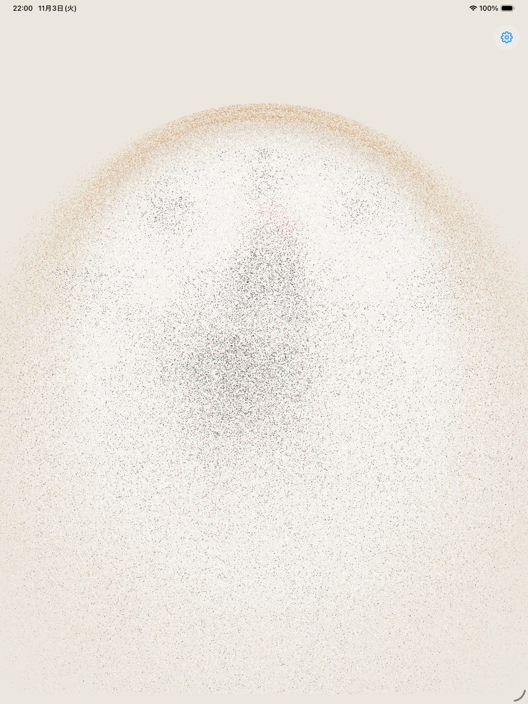

タイマーは2本まで
長針と秒針で別々のタイマーを置けます。外周の色の輪と、デジタルの残り時間で見せます。
使い方
長針を時計回りに回すと分単位、秒針を回すと秒単位でタイマーが始まります。タイマーは2つまで同時に置けます。下の時計は、このページで試せる練習用です。
長針の先の丸いつまみを、指やマウスで回してみてください。キーボードの ← → でも変えられます。
お試し用のデモです。実際の時間では動きません（6秒に短縮して再生します）。アプリでは、終わると時計が粒になって飛び散ります。
長針で「分」、秒針で「秒」を決めます。メニューを開く必要はありません。
時計の外周に色の輪が出て、少しずつ減っていきます。デジタル表示や砂時計表示にもできます。
時間が来るとチャイムとともに時計が粒になって飛び散ります。怒られるのではなく、お祝いの合図です。
設定（右上の歯車）→「時刻を進める」で、表示だけを5分・10分先に進められます。「針がここまで来たら、ごはん」という見せ方ができます。端末の時刻は変わりませんので、本体の時計が狂うことはありません。
壁掛け時計にする
設定→「壁の背景」で貼り付ける壁を撮影すると、時計の外側に同じ壁の写真が出て、壁と一体化したように見えます。「壁掛け時に0時を真上に」をオンにすると、端末が少し傾いても、センサーが読み取って12時が物理的な真上を向き続けます。
撮影した写真は端末の中にだけ保存され、外部に送信されることはありません。いつでも設定から削除できます。

機能
長針と秒針で別々のタイマーを置けます。外周の色の輪と、デジタルの残り時間で見せます。

残り時間の見せ方は、色の輪＋デジタル、または砂時計から選べます。

午後を13〜24で表示する学習モード。デジタル時計は好きな場所へドラッグして置けます。

部屋の明るさに合わせて、落ち着いた色合いの表示にもできます。

時間が来ると、時計が粒になって飛び散ります。「時間切れ」ではなく「できたね」の合図として設計しました。
料金
ダウンロードは無料です。初回起動から14日間は全機能をお試しいただけます。期間が終わっても、時計表示・壁の背景・タイマー1本などの無料機能はそのまま使えます。全機能のアンロックは¥800の買い切り（非消耗型のアプリ内課金）で、サブスクリプションはありません。
サポート案内
A. いいえ。本アプリは通信を行わず、写真や設定は端末内にのみ保存されます。広告やアクセス解析の仕組みもありません。詳しくはプライバシーポリシーをご覧ください。
A. 表示開始から1時間は自動で消灯しない設定になっています。それ以降は端末の自動ロック設定に従います。長時間の壁掛け利用では、端末の設定で自動ロックを「なし」にしてください。
A. ありません。壁の写真は端末内にのみ保存され、外部に送信されることはありません。アプリの設定からいつでも削除できます。
A. 狂いません。変わるのはこのアプリの表示だけです。端末の時刻設定には一切触れません。
A. ダウンロードは無料で、14日間は全機能をお試しいただけます。その後も無料機能は使い続けられます。全機能のアンロックは¥800の買い切りです（料金の説明）。
お問い合わせ
不具合のご報告・ご要望は、開発者（ナリユキPdM）までご連絡ください。端末の種類と iOS のバージョンを添えていただくと、確認が早くなります。